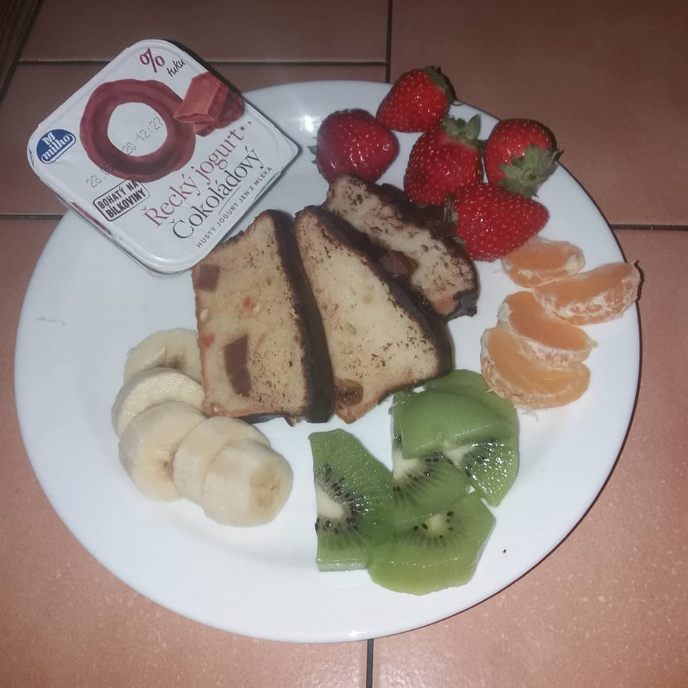

Ovocný chlebíček podľa @jita.vavrova — Normy Jedál
Dneska trochu pozdnější snídaně. Ještě jsem 2 dny doma 🛌 💊 🤧😓, tak není kam spěchat. Takže : tvarohový chlebíček s kandovaným ovocem od @antoninovopekarstvi, řecký čokoládový jogurt od @milkopolabskemlekarny a samozřejmě čerstvé ovoce - vše přivezeno @kosik.cz 🍓🍌🍊🥝
#snidane #mojesnidane #mojejidlo #jidlo #ovoce #reckyjogurt #jogurt #ovocnychlebicek #@antoninovopekarstvi #@kosik.cz #@milkopolabskemlekarny
#breakfast #mybreakfast #meal #mymeal #yoghurt #greeceyoghurt #fruit #freshfruit